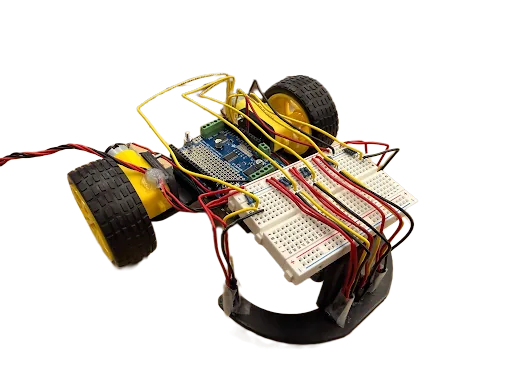
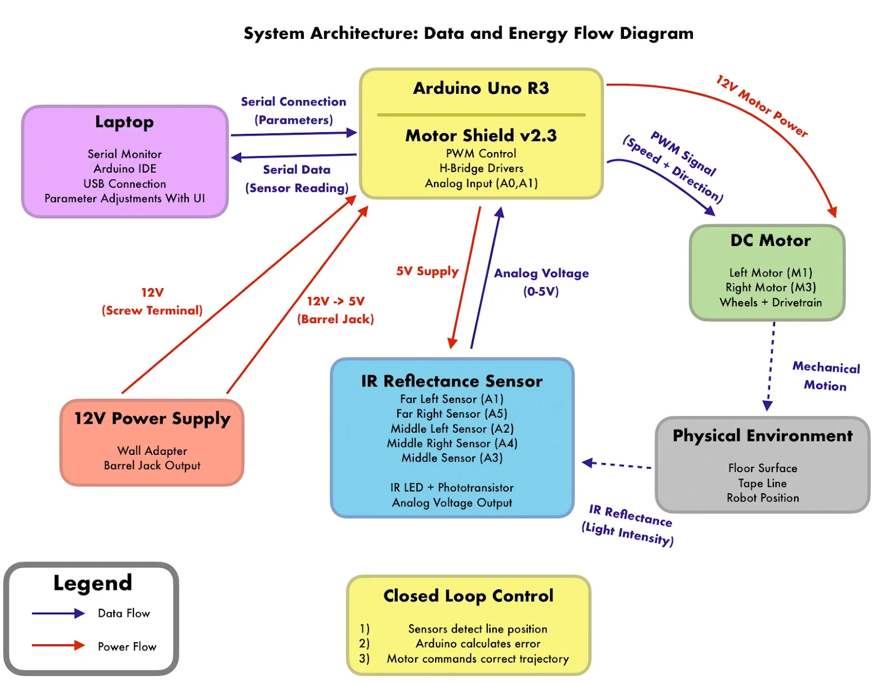
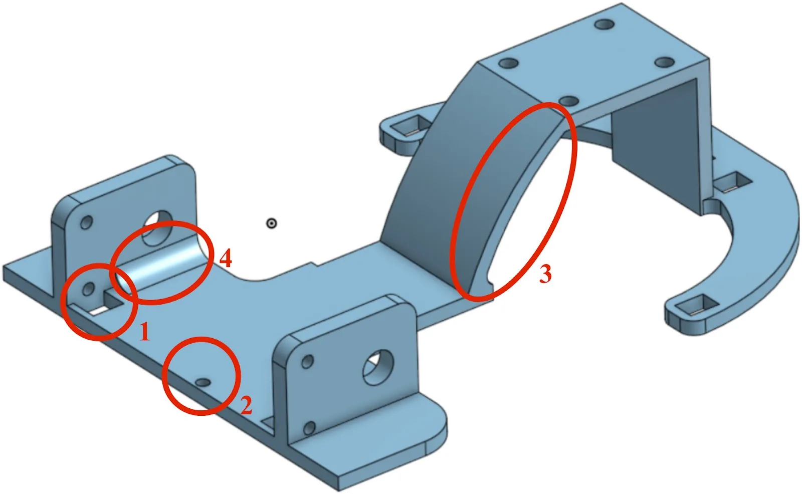
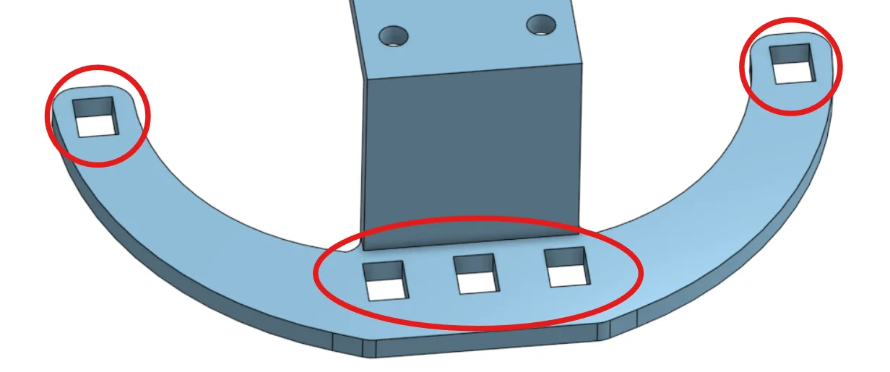
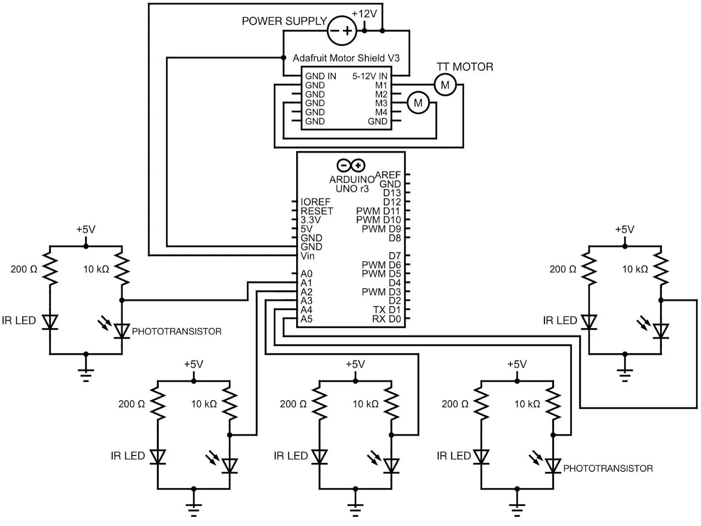
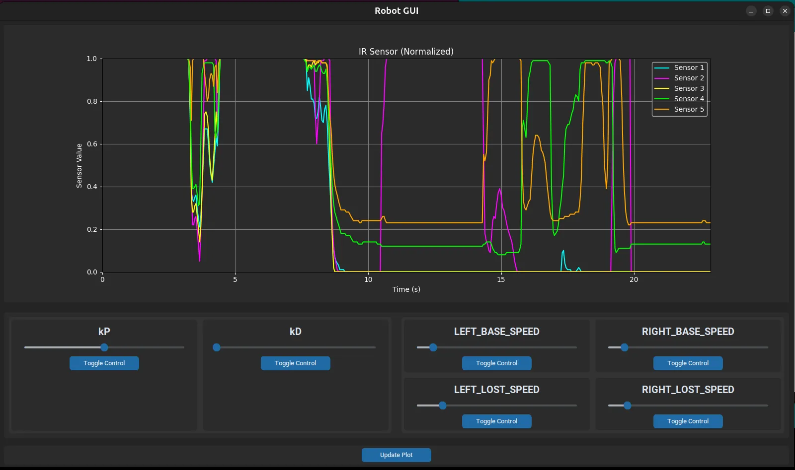
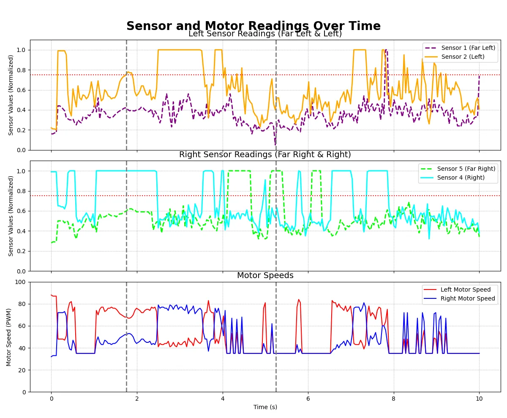

A two-wheeled robot that follows a taped track on the floor. An Arduino runs a closed-loop PD controller on five IR reflectance sensors and drives the wheels through a motor shield, while a Python GUI tunes the gains over serial as the robot runs. The best lap was 30 s, with 15 of 15 successful runs.
Overview
The course was a non-circular loop with corners tighter than 90 degrees. One requirement was tuning the controller over serial while the robot ran, without recompiling, so we could push for the fastest lap.

We designed our own chassis so we could set the wheel-to-wheel distance, sensor placement and sensor height ourselves. The controller is proportional-derivative (PD) and reads five infrared sensors:
- Three center sensors: positioned close together for main line following
- Two outer sensors: positioned further out and less far forward for sharp corner detection
The controller keeps the robot centered using the three main sensors and only reads the outer pair when the main sensors lose the line. That split let the robot run fast on straights and still take sharp corners reliably.

Design
Chassis
The motors and wheels sit at the back, which puts the sensors on a longer arm for turning and keeps the weight over the drive wheels for traction. The chassis is 5 inches wide by 6.5 inches long and rests on three points:
- Two driven wheels in the back for propulsion
- One caster wheel in the front for balance
- Sloped design to accommodate the caster wheel without interference
- Adjustable sensor height using caster wheel spacers

The numbered features in the CAD render:
- Motor nut clearance: a hole that leaves room for the nut on the screw holding the motor.
- Arduino mounting: a hole for screwing the Arduino and motor shield to the chassis.
- Caster wheel slope: a sloped cut-out so the caster clears the chassis. Only the front needs it since the robot drives forward.
- Reinforced motor mounts: thick mounts chamfered into the base.
Every dimension came from measuring the physical parts with a caliper, with tolerances added for assembly.
Sensor array
The first version had three sensors close together in the center. It failed on turns sharper than 90 degrees because none of the sensors could see the line in the corner. We added one sensor on each side, set slightly further back, to catch the line when the center sensors lost it.
The three center sensors are 8 mm apart, slightly wider than the tape. That made the code simpler: when the robot is centered, the middle sensor sees full tape and the two beside it see only the edges.

Electronics and control
Components
- Infrared sensors: TCRT5000 with analog voltage output (0–5 V)
- Motors: 3–7.2 V DC gearmotors, 210 RPM, 48:1 gear ratio, driven at 12 V
- Microcontroller: Arduino Uno with ATmega328P
- Motor control: Adafruit Motor Shield v2.3 with PWM speed control
- Power: 12 V wall adapter split between Arduino and Motor Shield

Sensor circuit
Each IR reflectance sensor includes:
- IR LED with a 200 Ω current-limiting resistor (~15 mA current)
- Phototransistor with a 10 kΩ pull-up resistor
- Analog voltage output proportional to surface reflectivity
PD control
The firmware is a finite state machine (FSM) with two states:
- PD control: active while the center sensors see the line.
- Line search: entered when the center sensors lose the line; the outer sensors decide which way to turn until the line is back under the center.
In the PD state the controller computes an error from the left and right readings and adds a proportional and a derivative correction to the base speed:
ERROR = (LEFT_READING - RIGHT_READING)
CORRECTION = Kp * ERROR + Kd * (ERROR - LAST_ERROR)
LEFT_SPEED = BASE_SPEED + CORRECTION
RIGHT_SPEED = BASE_SPEED - CORRECTIONTuned parameters
| Parameter | Value | Role |
|---|---|---|
| Kp (proportional gain) | 10 | Provides immediate response to error |
| Kd (derivative gain) | 15 | Provides damping to reduce oscillation |
| Base speed | 50 | On the 0–255 PWM range |
Software

I wrote a Python GUI that talks to the Arduino over serial, so we could change parameters while the robot was running instead of recompiling. It has:
- Real-time normalized IR sensor readings plotted over time
- Adjustable sliders for Kp, Kd and motor speeds
- Bidirectional serial protocol for sending commands and receiving sensor data
Tuning went from an upload per change to a slider drag per change, which is where most of the lap-time improvement came from.

Results
- Best lap time: 30 seconds
- Success rate: 15/15 attempts (100%)
- Sensor calibration: consistent readings across the surfaces we tested on
- Sharp corners: takes turns of more than 90°
Sharp corners
Problem: Sharp corners (especially the "armpit" of the course) made the 3-sensor design lose the line.
Fix: Added 2 outer sensors and the FSM line-search state to detect and recover from line loss.
Prototype iteration
Problem: The first build used a solderable breadboard, so swapping components meant desoldering.
Fix: Switched to a solderless breadboard for prototyping and planned a PCB for the final version.
Tuning speed
Problem: Recompiling and re-uploading for every gain change was slow.
Fix: The Python serial GUI, described above.
Specifications
| Specification | Value |
|---|---|
| Dimensions | 5" W × 6.5" L chassis |
| Sensors | 5× TCRT5000 IR reflectance sensors |
| Sensor height | 5 mm above ground (set by testing) |
| Sensor spacing | 8 mm between center sensors |
| Motors | 2× DC gearmotors, 210 RPM, 48:1 ratio |
| Control frequency | ~100 Hz (10 ms loop time) |
| Power | 12 V DC supply |
What I learned
- Sensor calibration mattered more than the gains. Once the readings were normalized the robot was reliable.
- Being able to re-cut the chassis quickly is what let us move the sensors until they worked.
- Live tuning tools pay for themselves on the first day.
- A two-state FSM kept corner handling separate from normal line following, which made both easier to debug.